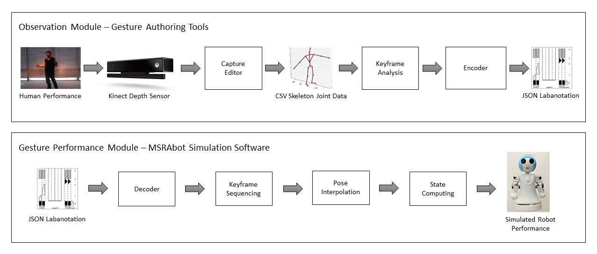
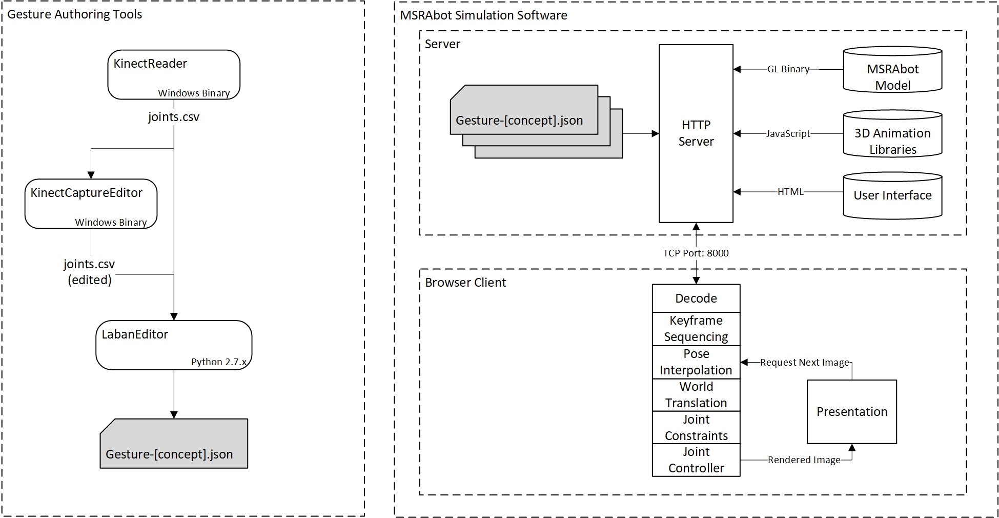

Microsoft Applied Robotics Research Library
Open Source Samples for Service Robotics

Labanotation Suite
Authors: David Baumert, Zhaoyuan Ma, John Lee, Sven Pleyer, Takuya Kiyokawa, Katsushi Ikeuchi
This Labanotation Suite repository contains a robot gesture authoring system comprised of software tools, source code, simulation software and sample data that supports experimentation with the concepts presented in the paper Describing Upper-Body Motions Based on Labanotation for Learning-from-Observation Robots (International Journal of Computer Vision, December 2018). This suite can be used to help robots gesture in natural and meaningful ways.
Contributing
This project welcomes contributions and suggestions. Most contributions require you to agree to a Contributor License Agreement (CLA) declaring that you have the right to, and actually do, grant us the rights to use your contribution. For details, visit https://cla.opensource.microsoft.com.
When you submit a pull request, a CLA bot will automatically determine whether you need to provide a CLA and decorate the PR appropriately (e.g., status check, comment). Simply follow the instructions provided by the bot. You will only need to do this once across all repos using our CLA.
This project has adopted the Microsoft Open Source Code of Conduct. For more information see the Code of Conduct FAQ or contact opencode@microsoft.com with any additional questions or comments.
Robot Gesture Authoring System Description
System Modules:

System Diagram:

Gesture Authoring Tools
KinectReader
A Windows application that connects to a Kinect sensor device and provides a user interface for capturing and storing gestures performed by human subjects. It's primary output data is human stick-figure joint positions in a .csv format, but can also capture corresponding RGB video and audio at the same time.
KinectCaptureEditor
A Windows application that loads human joint position .csv files produced by the KinectReader or other Gesture Authoring Tools, as well as optional corresponding video and audio files. It provides a timeline-based method to edit audio and joint movement sequences into meaningful gestures.
LabanEditor
A Python script application that loads a Kinect joint .csv file representing a human gesture, provides algorithmic options for automatically extracting keyframes from the gesture that correspond Labanotation data, and provides a graphical user interface for selection and modification of the extracted keyframes. Additionally, it saves the resulting gesture data in a .json file format suitable for controlling robots running a gesture interpretation driver, as well as .png graphic file renderings of the charts and diagrams used in the interface.
MSRAbot Simulation Software
A ready-to-run file tree that can be added to an HTTP server and viewed by most modern web browsers. The files implement a javascript simulation environment that hosts an animated model of the MSRAbot humanoid robot, along with viewing controls and an ability to render new JSON gesture files created using the Gesture Authoring Tools in this repository.
FAQ
-
Q Who should I contact regarding this repository?
-
A Please create a Github issue or email robotics@microsoft.com with any questions or feedback.
-
Q Is this code suitable for non-robotic applications such as documenting dance steps?
-
A Currently, the gesture capture system only addresses movement of the upper human torso. However, we may expand to capturing the entire human skeleton in the future.
Citation
If you want to cite this work, please use the following bibtex code
@Article{Ikeuchi2018,
author="Ikeuchi, Katsushi
and Ma, Zhaoyuan
and Yan, Zengqiang
and Kudoh, Shunsuke
and Nakamura, Minako",
title="Describing Upper-Body Motions Based on Labanotation for Learning-from-Observation Robots",
journal="International Journal of Computer Vision",
year="2018",
month="Dec",
day="01",
volume="126",
number="12",
pages="1415--1429",
issn="1573-1405",
doi="10.1007/s11263-018-1123-1",
url="https://doi.org/10.1007/s11263-018-1123-1"
}